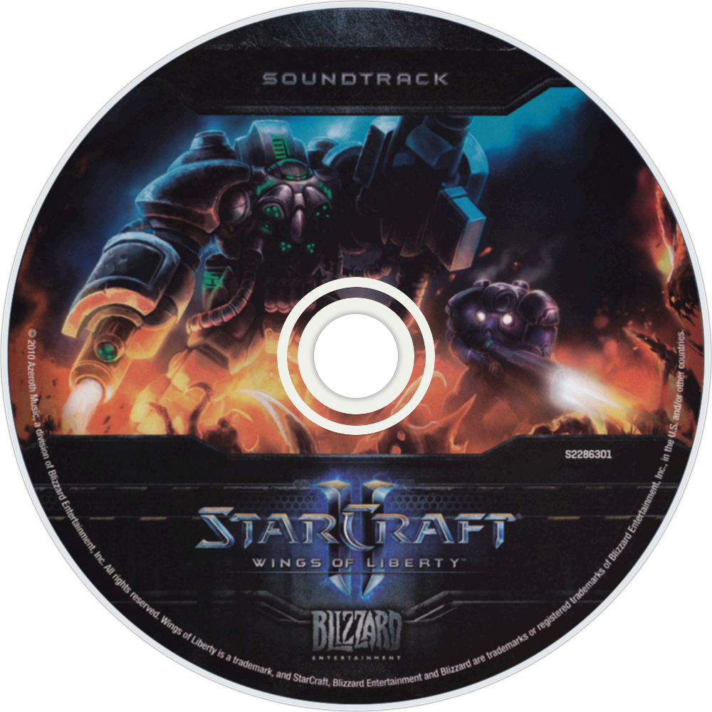

starcraft II all story
- starcraft story
- Wage war across the galaxy with three unique and powerful races. StarCraft
II is a real-time strategy game from Blizzard Entertainment for the PC and Mac.
hero's story
jim raynor
-
-
- Jim raynor
- The Heaven's Devils
- "If you want to enlist, Son, that's your choice. Because in this life, you
are who you choose to be. And it doesn't surprise us one bit that our son wants
to be a hero."
- By 2488, the Terran Confederacy had been embroiled in the Guild Wars for
three years. Resources were rationed, taxes were rising, and the military began
to more aggressively recruit young folk, including Tom Omer, one of Raynor's
friends.
Sarah Kerrigan
-
- Sarah Kerrigan
- Early Life and Ghost Training
- stro "I am the Swarm. Armies will be shattered. Worlds will burn. Now at last, on
this world, vengeance shall be mine. For I am the Queen of Blades."
- Young Sarah Kerrigan's latent powers were demonstrated during an incident on
TarKossia where she accidentally killed her mother and damaged the brain of her father, Patrick. She was quickly taken in
hand from her mother's burial by Confederate agents and conscripted as a child
into the Ghost Program.
-
Zeratul
-
-
- Zeratul
- Dark Prelate Zeratul was a revered Nerazim mystic.
- "I do this for Aiur."
- During the Great War, Zeratul allied with the Khalai Tassadar, despite his
hatred for the Conclave that once banished his forbears. The Dark Templar
personally slew the cerebrate Zasz, but in turn accidentally gave the Overmind
the location of Aiur.[6] Zeratul was manipulated by Sarah Kerrigan during the
Brood War into killing the Second Overmind and Raszagal, the Dark Templar
Matriarch.
-

- Terran music 1.
- Terran Three(From starcraft)
- Lord Bif Music 2018
-
-
- Terran music 1.
- Terran Three(From "starcraft")
- Lord Bif Music 2018
-
- Terran music 2.
- Terran Three(From "starcraft")
- Lord Bif Music 2017
-
- Terran music 3.
- Terran Three(From "starcraft")
- Lord Bif Music 2016